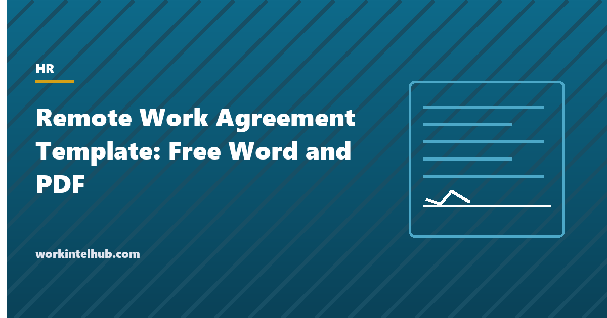

Remote Work Agreement Template: Free Word and PDF

A remote work policy sets the rules for everyone; a remote work agreement records the arrangement for one person: where they will work, when they will be available, what equipment they have, what the company pays for, how their time is recorded, and how either side ends the arrangement. It is the document that answers "but we agreed" with a page both people signed.
The template is a twelve-clause agreement with a schedule of equipment, plus an Excel register of agreements with review dates and remote states, and a self-certification checklist for the home workspace. Use it with the remote work policy, which it references, and the hybrid work policy for part-time remote arrangements.
Download the templates
Free files: Word, Excel and PDF
Three files, free, no email required. Word to edit, Excel to track, PDF to print or share.
Templates open in Microsoft Word, Excel, Google Docs and Sheets, LibreOffice and any PDF reader. Free to use and adapt for your organisation.
What is in the agreement
| Clause | Why it matters |
|---|---|
| Work location | Tax, workers' compensation and employment law follow the address; moves need approval |
| Schedule and availability | Prevents the "always on" and "never reachable" disputes in the same clause |
| Time recording | Non-exempt employees must record every hour, including the late email |
| Equipment | Company property, company use, returned on exit |
| Expenses | Stipend or claims, and the state law override |
| Workspace and safety | Injuries at home during work are workers' compensation claims |
| Security | Devices, networks, confidentiality, lost-device reporting |
| Performance | Same outcomes as the office; office visits and travel status |
| Monitoring | Links the monitoring policy and the state notice |
| Review and termination | How the arrangement ends without ending employment |
Location is the clause that costs money
An employee who moves to another state without telling anyone creates obligations the employer did not choose: income tax withholding and unemployment insurance registration in the new state, workers' compensation coverage there, that state's leave, pay and notice laws, and sometimes a corporate tax presence. The agreement fixes the primary location, requires approval for changes, and the States sheet in the workbook tracks where everyone is and whether the company is registered. Working abroad adds immigration and permanent-establishment questions and should need separate approval. The laws by state pages show how much changes at a border.
Ending the arrangement without a dispute
The agreement separates the arrangement from the job: either side may end remote work with notice, and the company may end it faster for business reasons, performance or breach, but ending remote work is not a dismissal. That distinction matters where remote work was granted as an accommodation under the ADA, which cannot be withdrawn without the interactive process, and where it was in the offer letter, which may make it a contractual term; say in the agreement which it is. The offboarding checklist covers equipment return when employment ends.
Using the template
- One agreement per remote employee, signed by employee, manager and HR, reviewed every six months.
- Fill the equipment schedule from the asset register and update it on every issue and return.
- Have the employee complete the workspace self-certification; it is the record for safety and insurance.
- Set the stipend or claims process to match the expense policy and the state law.
- Give the monitoring notice alongside it in New York, Connecticut and Delaware.
Key takeaways
- A remote work agreement records one employee's arrangement: location, hours, time recording, equipment, expenses, safety, security, performance, monitoring and how it ends.
- Location changes need approval; they create tax, insurance and employment law obligations in the new state.
- Ending the arrangement is not ending employment, unless remote work was an accommodation or a contract term.
- Sign it, review it every six months, keep the equipment schedule current.
Frequently asked questions
What is a remote work agreement?
A signed document between an employer and one employee that records the terms of that employee's remote arrangement: work location, schedule and availability, time recording, equipment, expenses, workspace safety, security, performance expectations, monitoring and how the arrangement is reviewed and ended. It sits under the remote work policy.
Is a remote work agreement legally binding?
It is a written record of agreed terms and is enforceable to the extent any employment document is; it does not change the at-will or contractual nature of the employment unless it says so. Its main value is evidential: both sides know what was agreed.
What should the agreement say about location?
The primary remote address, that work from elsewhere for more than a few days and any change of primary location or state require written approval, and that the employee is responsible for telling the company before moving. Location drives tax, insurance and employment law.
Can an employer end a remote work arrangement?
Yes, with the notice the agreement provides, for business reasons, performance or breach, unless remote work was granted as a disability accommodation (which requires the interactive process) or written into the contract of employment. Ending the arrangement does not end employment.
Do remote employees need to record their time?
Non-exempt employees must record all hours worked wherever they work, including work outside scheduled hours. The agreement says how, and the employer must pay for all recorded time. Exempt employees are not required to record hours for pay, though many organisations ask for availability.